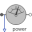
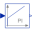

AIMC_withLossesTest example: AsynchronousInductionMachineSquirrelCage with losses |
|
Diagram
{kind=link}
Information
This information is part of the Modelica Standard Library maintained by the Modelica Association.
- Simulate for 5 seconds: The machine is started at nominal speed, flux is build up in the machine.
- Continue the simulation for additional 5 seconds: Subsequently a load ramp is applied.
- Compare by plotting versus Pmech:
| Current | I_sim | I_meas |
| Speed | w_sim | w_meas |
| Power factor | pf_sim | pf_meas |
| Efficiency | eff_sim | eff_meas |
Machine parameters are taken from a standard 18.5 kW 400 V 50 Hz motor, simulation results are compared with measurements.
| Nominal stator current | 32.85 | A |
| Power factor | 0.898 | |
| Speed | 1462.5 | rpm |
| Electrical input | 20,443.95 | W |
| Stator copper losses | 770.13 | W |
| Stator core losses | 410.00 | W |
| Rotor copper losses | 481.60 | W |
| Stray load losses | 102.22 | W |
| Friction losses | 180.00 | W |
| Mechanical output | 18,500.00 | W |
| Efficiency | 90.49 | % |
| Nominal torque | 120.79 | Nm |
| Stator resistance per phase | 0.56 | Ω |
| Temperature coefficient | copper | |
| Reference temperature | 20 | °C |
| Operation temperature | 90 | °C |
| Stator leakage reactance at 50 Hz | 1.52 | Ω |
| Main field reactance at 50 Hz | 66.40 | Ω |
| Rotor leakage reactance at 50 Hz | 2.31 | Ω |
| Rotor resistance per phase | 0.42 | Ω |
| Temperature coefficient | aluminium | |
| Reference temperature | 20 | °C |
| Operation temperature | 90 | °C |
See:
Anton Haumer, Christian Kral, Hansjörg Kapeller, Thomas Bäuml, Johannes V. Gragger
The AdvancedMachines Library: Loss Models for Electric Machines
Modelica 2009, 7th International Modelica Conference
Parameters (1)
| aimcData |
Value: Type: AIM_SquirrelCageData |
|---|
Outputs (13)
| Pmech |
Default Value: powerSensor.power Type: Power (W) Description: Mechanical output |
|---|---|
| Ps_sim |
Default Value: sqrt(3) * VNominal * I_sim * pf_sim Type: Power (W) Description: Simulated stator power |
| Ps_meas |
Default Value: sqrt(3) * VNominal * I_meas * pf_meas Type: Power (W) Description: Simulated stator power |
| loss_sim |
Default Value: Ps_sim - Pmech Type: Power (W) Description: Simulated total losses |
| loss_meas |
Default Value: Ps_meas - Pmech Type: Power (W) Description: Measured total losses |
| I_sim |
Default Value: currentQuasiRMSSensor.I Type: Current (A) Description: Simulated current |
| I_meas |
Default Value: combiTable1Ds.y[1] Type: Current (A) Description: Measured current |
| w_sim |
Default Value: aimc.wMechanical Type: AngularVelocity (rad/s) Description: Simulated speed |
| w_meas |
Default Value: combiTable1Ds.y[2] Type: AngularVelocity (rad/s) Description: Measured speed |
| pf_sim |
Default Value: if noEvent(Sel > Modelica.Constants.small) then Pel / Sel else 0 Type: Real Description: Simulated power factor |
| pf_meas |
Default Value: combiTable1Ds.y[3] Type: Real Description: Measured power factor |
| eff_sim |
Default Value: if noEvent(abs(Pel) > Modelica.Constants.small) then Pmech / Pel else 0 Type: Real Description: Simulated efficiency |
| eff_meas |
Default Value: combiTable1Ds.y[4] Type: Real Description: Measured efficiency |
Components (16)
| aimc |
Type: AIM_SquirrelCage |
|
|---|---|---|
| terminalBox |
Type: TerminalBox |
|
| electricalPowerSensor |
Type: ElectricalPowerSensor |
|
| currentQuasiRMSSensor |
Type: CurrentQuasiRMSSensor |
|
| sineVoltage |
Type: SineVoltage |
|
| star |
Type: Star |
|
| ground |
Type: Ground |
|
|  | powerSensor |
Type: PowerSensor |
| loadInertia |
Type: Inertia |
|
| torque |
Type: Torque |
|
| gain |
Type: Gain |
|
|  | PI |
Type: PI |
| feedback |
Type: Feedback |
|
| ramp |
Type: Ramp |
|
| combiTable1Ds |
Type: CombiTable1Ds |
|
| aimcData |
Type: AIM_SquirrelCageData |